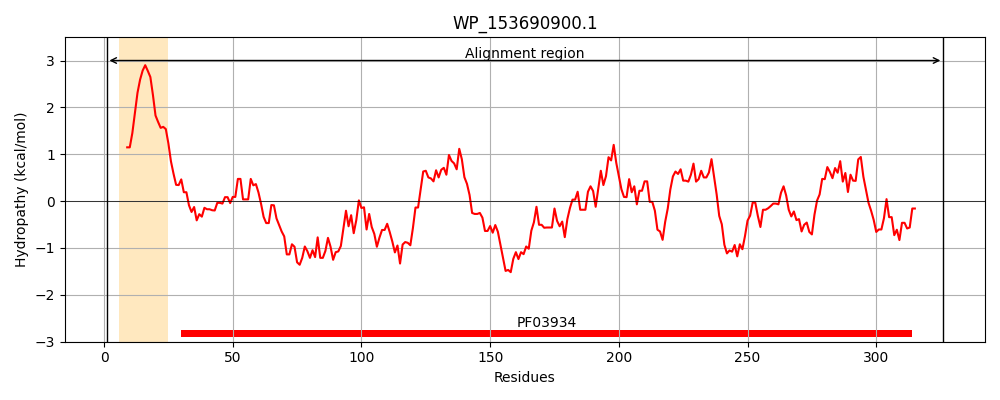
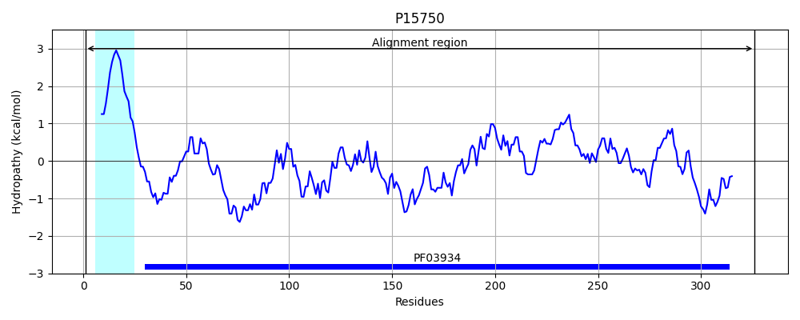
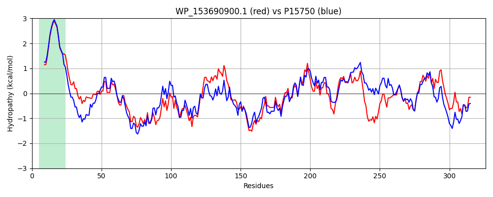

Hit Accession: P15750
Hit TCID: 3.A.15.1.1
Hit Description: gnl|BL_ORD_ID|9185 gnl|TC-DB|P15750|3.A.15.1.1 General secretion pathway protein K (Pullulanase secretion protein PULK) - Klebsiella pneumoniae.
Mach Len: 326
e:0.000000
Query TMS Count : 1
Hit TMS Count: 1
TMS-Overlap Score: 1.000000
Predicted Substrates:CHEBI:36080;protein
BLAST Alignment:
Score: 1219 , Bit scores: 474 bits, E-value: 9.4e-170, Alignment length: 326, Percentage identity: 73
Query: 1 MKNRQRGVALLMVLFILALMMILASAMTERTAVMYQHTAVTLDNLQARWYALAAENMAAALLQRDALDSPSQTNLAQSWAQEGRRFTLDDGEIRATIRDGHACFNLNAINHRADETSGGTPYPTDVFVRLLALLGESPLRASQIAAALGDWTDSDGQPRLNGAEDEVYMAQTPGYLAANQPMQDVSELRLLAGMDAALYQRLLPFVCAQPDDALQVNVNTLRPSQAPLLVALFPGELTLQEAQQLLHNRPRTGWSSVAAFLAQPTLQKTDTTLARPWLTVHSTRFIAAFSVATGNLRFQLHSVLQQEGRTFTVVQRRYGLSMVVDE 326
M +RQRG+ALLMVL ILALMM+LASAMTER+A MYQ TA TLDNLQA+WYAL AE +AAALLQRDALDSP+QT+LAQ+WAQ+GRRFT++DGEI ATI D ACFNLNAIN R D+ S PYP +F RLL LG PLRA Q+ AAL DW D D QP LNGAEDEVYMAQ+PGYL NQP+QDVSELRLLAGMDAALYQRLLP+VCA D+ LQVNVNTL+P +A LL ALFP ELTL EA+QLL R TGWSSVAAFL+QP LQKTDT ARPWL VHS RFIA FSV GN R+Q S+LQ++GRTF VVQRRYG+ V DE
Sbjct: 1 MNHRQRGIALLMVLLILALMMVLASAMTERSARMYQQTATTLDNLQAKWYALGAETLAAALLQRDALDSPNQTHLAQNWAQQGRRFTVNDGEIYATITDAQACFNLNAINQRGDDESAAVPYPAQIFTRLLENLGSEPLRALQLTAALRDWVDDDRQPLLNGAEDEVYMAQSPGYLTGNQPLQDVSELRLLAGMDAALYQRLLPYVCALADETLQVNVNTLQPDRAALLAALFPAELTLVEARQLLQARAATGWSSVAAFLSQPALQKTDTAAARPWLAVHSERFIATFSVVMGNARYQQRSLLQKQGRTFGVVQRRYGIYWVADE 326 | Protein Hydropathy Plots: |
|---|
|  |  |
Pairwise Alignment-Hydropathy Plot:
|
|---|
|  |